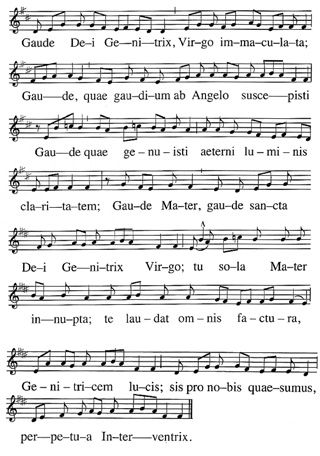
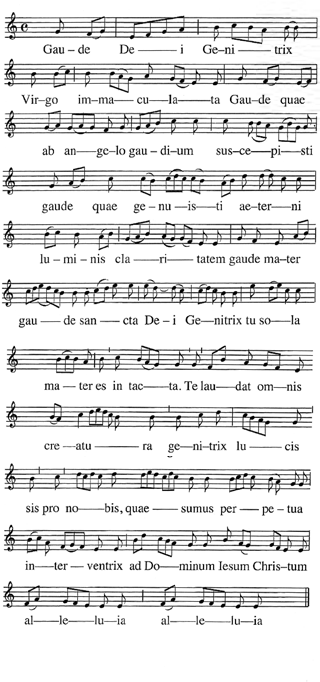
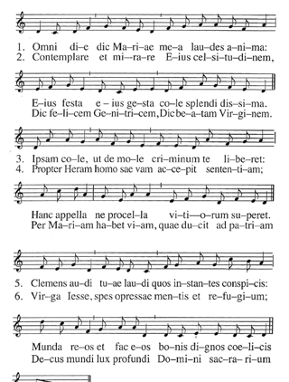

Sub tuum praesidium, confugimus Sancta Dei Genitrix, nostras deprecationes ne despicias in necessitatibus nostris, sed a periculis cunctis libera nos semper, Virgo gloriosa et benedicta. Domina nostra, Mediatrix nostra, Advocata nostra, Tuo Filio nos reconcilia, Tuo Filio nos recommenda, Tuo Filio nos repraesenta.
Melodia I.

Melodia II.

